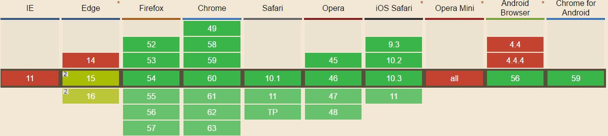

Before this time, it could be said without exaggeration that I almost forgot the "var" in CSS, because I could manage CSS code without using "var" in most of the time, in fact it is so. But today, I found a web page of Baidu using this method to improve CSS code reusability. Therefore I want to write a blog to help me remember the application of "var" in CSS.
1. First of all, let's see the compatibility.
We can see from this chart that "var" is supported perfectly by Firefox, Chrome, Safari, Opera, except IE(Always IE, oh...). But maybe supported in the future, hope so.

2. Three things
(1) How to name a variable of CSS? "--*" ;
(2) How to use "var"? "var(--*[, ]?)", it means "var( variety name [, defaults])", we can omit the default values;
(3) What is ":root"? ":root" pseudo-class represents the root element of an HTML document, we can put the variables in ":root".
:root {
--text-color: #000000;
}
p {
color: var( --text-color );
font-size: 16px;
}
3. Coverage.
If we set many values to a variable, what will happen? Let's see an example:
:root { --text-color: green;}
p { --text-color: red;}
#parent{ --text-color: blue;}
*{ color : var(--text-color);}
Let's see the result together:
<div> I use the color of ":root" </div>
<p> I use the color of "p" </p>
<div id="parent">
I use the color of "#parent"
<div id="child"> I use the color of "#parent" </div>
</div>
Yes, we can see very clearly that the variable follows the CSS selector.
4. Some precautions.
(1) "var" in CSS cannot be named as a variable, such as "--text-color: background-color;", it will make a mistake.
(2) Cannot set a variable that does not match the unit. For example:
body {
--text-color: 20px;
background-color: var(--text-color);
}
(3) Cannot add units when getting variables. The Example as follows will return as "10 px", you should notice that there has a " " between "10" and "px", so it is an invalid value.
body {
--size: 10;
font-size: var(--size)px;
}
5. Two things we can do.
(1) Use "calc()".
We have said that "var" cannot be added units, but we can use "calc()" to finish this work, the example will return "10px", it's right.
body {
--size: 10;
font-size: calc(var(--size) * 1px);
}
(2) The transitivity of "var".
We can use "--one" as a value to name the "--two", as the example shows:
body {
--size: 10;
--text-size: var(--size);
}